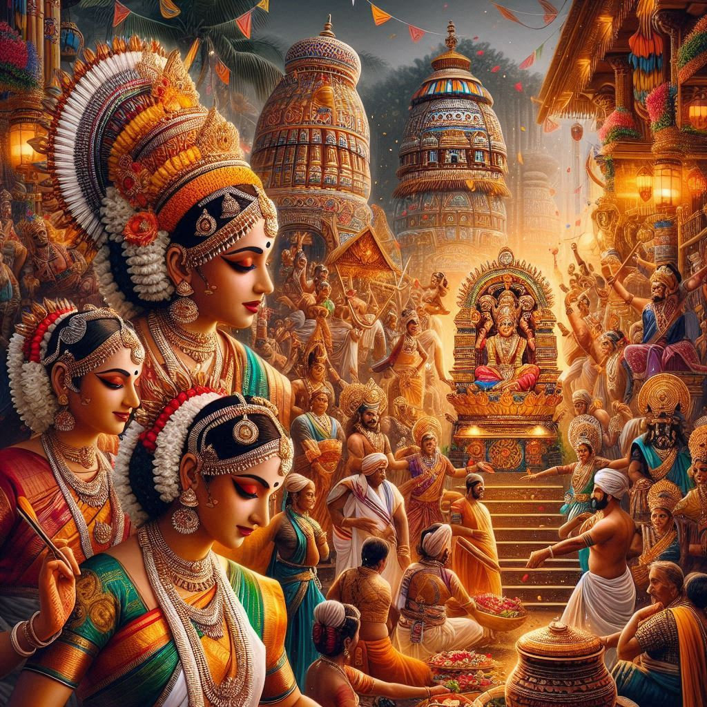
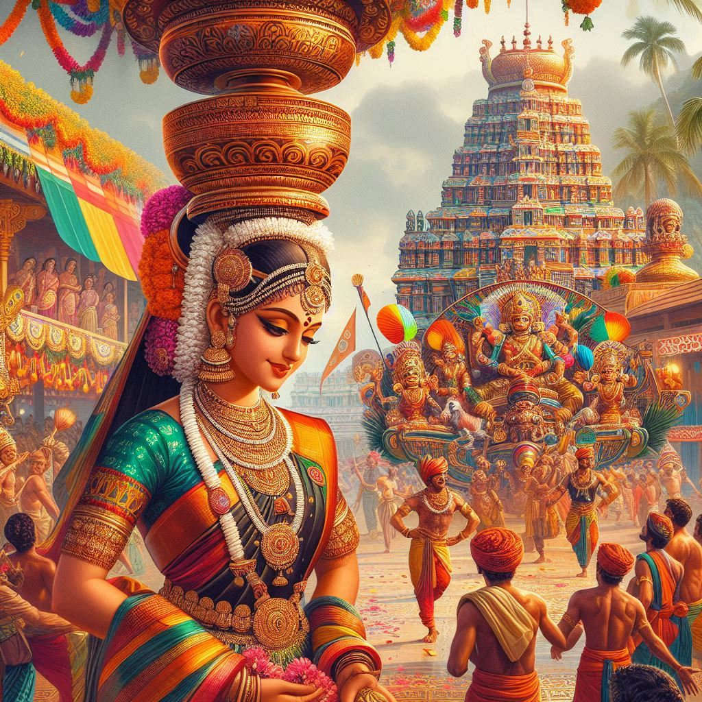

Traditions of Karnataka
Karnataka is a state rich in cultural heritage and traditions that have been passed down through generations.
The people of Karnataka, with their diverse ethnic groups and languages, celebrate a variety of customs and traditions that reflect the state's deep-rooted history, spiritual beliefs, and vibrant festivals. Here’s an insight into the main traditions of Karnataka:
1. Festivals
Festivals in Karnataka are a mix of Hindu, Muslim, Christian, and other local traditions. Some of the most prominent festivals celebrated in the state include:
- Ugadi: The Kannada New Year, celebrated in the months of March-April, marks the beginning of the new calendar year. The festival is celebrated with great enthusiasm, with special prayers, festive meals, and cultural events.
- Dasara (Dussehra): Perhaps the most important festival in Karnataka, Dasara is celebrated in Mysuru with grandeur and color. The royal Mysore Palace is illuminated, and a grand procession with elephants, horses, and dancers takes place, showcasing Karnataka’s cultural and royal traditions.
- Deepavali (Diwali): The festival of lights is celebrated with family gatherings, firecrackers, and sweets. In Karnataka, it is also linked with the worship of Lord Krishna and Goddess Lakshmi.
- Karaga: This unique and ancient tradition is celebrated in Bangalore and is associated with the worship of Draupadi, the mythical queen of the Mahabharata. The Karaga procession features men dressed as the goddess, carrying the decorated Karaga (a pot) on their heads through the streets.
- Makar Sankranti: A harvest festival, especially popular in the rural areas, where kite flying, bonfires, and special food items like "tilgul" (sesame sweets) are common.
2. Art and Dance Forms
Karnataka boasts a rich tradition of classical arts, including dance, music, and theatre:
- Yakshagana: A traditional folk theatre form that combines dance, music, and dialogue, often based on mythological stories. It is particularly popular in the coastal regions of Karnataka.
- Kuchipudi and Bharatanatyam: These classical dance forms, though originating in Andhra Pradesh and Tamil Nadu, have a strong presence in Karnataka, especially in temples and cultural festivals.
- Carnatic Music: Karnataka has contributed significantly to Carnatic classical music, with famous composers like Purandara Dasa and Kanakadasa.
- Mysore Paintings: This traditional art form, known for its rich, vibrant colors and intricate details, is associated with the royal Mysore kingdom. The paintings typically depict religious themes, particularly those related to Hindu mythology.
3. Cuisine Traditions
The cuisine of Karnataka is diverse and reflects the cultural traditions of the region. Some of the traditional foods include:
- Bisi Bele Bath: A rice-based dish with lentils and vegetables, spiced with a special masala, is a staple of Karnataka cuisine.
- Ragi Roti and Akki Roti: Traditional breads made from finger millet and rice flour, served with chutneys and curries.
- Mysore Pak: A sweet made of ghee, sugar, and gram flour, which is believed to have been created in the kitchens of the Mysore Palace.
- Neer Dosa: A soft and thin rice pancake, typically served with coconut-based curries.
- Rava Idli and Vada: A popular breakfast choice in Karnataka, particularly in Bangalore and Mysore.
- Kundapur Chicken Curry: A spicy coastal delicacy known for its rich and tangy flavor.


4. Clothing and Handicrafts
- Traditional Dress: The traditional attire for men in Karnataka is the lungi (a cloth wrapped around the waist) or dhoti, often worn with a shirt. Women traditionally wear sarees, with the style varying by region, such as the Kanjeevaram sarees in the southern part of the state.
- Channapatna Toys: Karnataka is famous for its colorful wooden toys, known as Channapatna toys. These toys are handcrafted and have a distinct traditional style.
- Mysore Silk Sarees: These sarees, known for their high-quality silk and intricate designs, are a significant part of Karnataka's textile tradition.
- Karnataka Handloom: The state is known for its Ilkal sarees (made from cotton and silk) and Lambani embroidery, a traditional form of tribal art.
5. Religious and Spiritual Traditions
Karnataka is home to several ancient temples and religious traditions, with a strong presence of Shaivism, Vaishnavism, and Jainism.
- Basava Jayanti: This is an important festival for the Lingayat community, associated with the 12th-century social reformer Basava, who is credited with establishing the Lingayat sect. The festival includes processions and religious rituals.
- Shivaratri: Devotees fast and offer prayers to Lord Shiva during this festival, especially celebrated at the Murudeshwar Temple and Bhoga Nandeeshwara Temple.
- Dattatreya Jayanti: This festival, celebrated by the devotees of Lord Dattatreya, is prominent in regions like Hubli-Dharwad and Gokarna.
6. Architecture and Temples
The state has a rich architectural tradition, with notable monuments like:
- Hampi: A UNESCO World Heritage Site with ruins of temples and palaces that reflect the grandeur of the Vijayanagara Empire.
- Badami: Known for its rock-cut temples and historical significance.
- Somnathpur and Halebidu Temples: Fine examples of Hoysala architecture, with intricately carved stone temples.
Conclusion
The traditions of Karnataka are deeply rooted in its culture and history, with an emphasis on spirituality, vibrant festivals, art, and cuisine. These traditions continue to thrive in the lives of the people of Karnataka, maintaining a beautiful balance between modernity and cultural heritage. Whether it is the art forms, festivals, clothing, or food, Karnataka remains a fascinating state with diverse and enduring traditions.